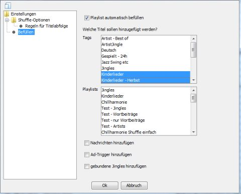

Konfiguration

Wechsele in den Playlisteinstellungen zum Punkt "Befüllen" und aktiviere "Playlist automatisch befüllen". Wähle die Tags oder Playlist aus deren Titel in die aktuelle Playlist übernommen werden sollen. Außerdem kannst Du festlegen ob die laut.fm-Nachrichten, Ad-Trigger und gebundene Jingles aus den globalen Einstellungen ebenfallst in die Playlist übernommen werden sollen. Wenn Du Nachrichten, Ad-Trigger oder gebundene Jingles konfiguriert hast, sie aber nicht in die Playlist übernimmst können sie nicht verwendet werden.
Playlists befüllen lassen
Um eine einzelne Playlist neu befüllen zu lassen öffne die Playlist im Playlistviewer und klicke auf  in der Toolbar.
in der Toolbar.
Um alle oder mehrere Playlist neu befüllen zu lassen öffne das -Menü und wähle . Es öffnet sich ein Dialog in dem Du die Playlists die neu befüllt werden sollen auswählen kannst.